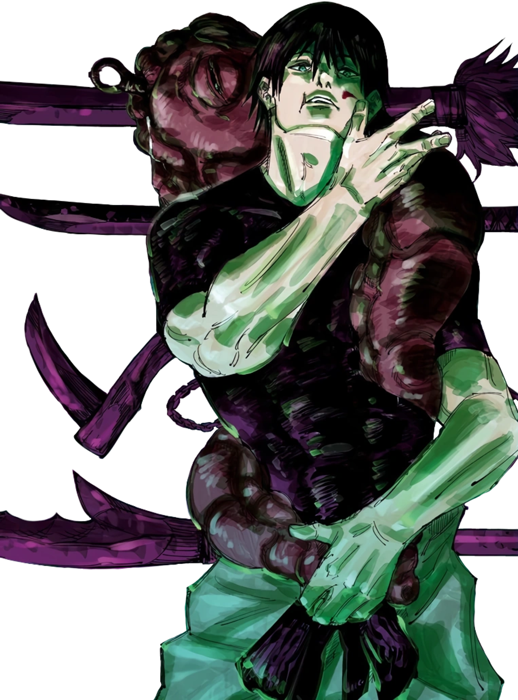
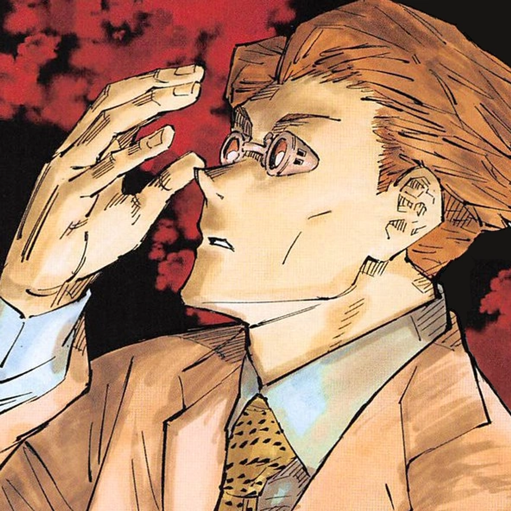
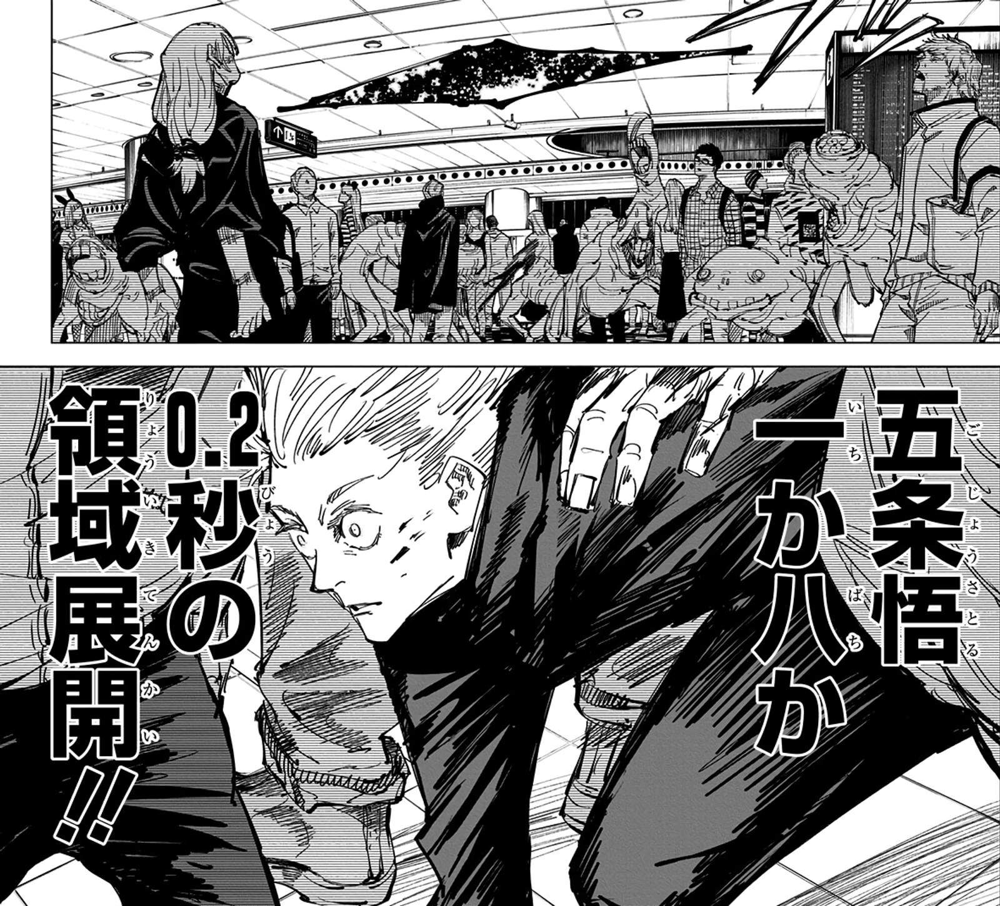
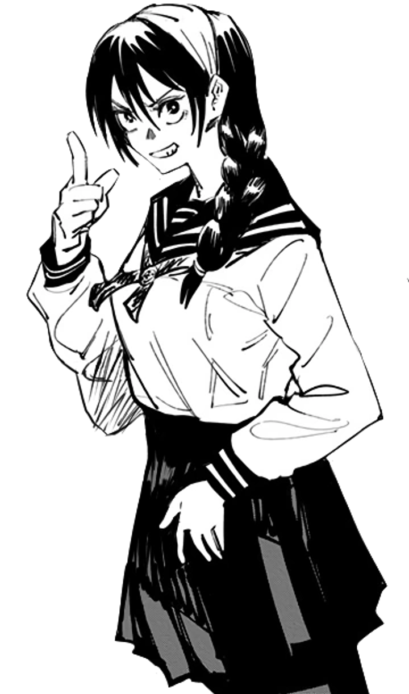

Cursed Energy · Domains · Season 2
JUJUTSU
KAISEN
A compendium of the world of sorcerers — the flow of cursed energy, the art of Domain Expansion, the warriors who wield them, and the rules that governed the Shibuya Incident.
SCROLL ▼
A compendium of the world of sorcerers — the flow of cursed energy, the art of Domain Expansion, the warriors who wield them, and the rules that governed the Shibuya Incident.
Every sorcerer's power flows from negative human emotion. Understanding the mechanics of cursed energy is the first step to mastery.
Negative energy born from human negative emotions — fear, grief, hatred, regret. It flows through the body like blood. Sorcerers learn to control, reinforce, and expel it. Output determines raw power; efficiency determines how long you can fight.
Innate abilities engraved in a sorcerer's body and soul, unique to each individual. Advanced applications are Technique Extensions — like Gojo's Blue, Red, and Hollow Purple.
Self-imposed rules that trade a restriction for a power boost. Sukuna's vow with Yuji — to never harm innocents — is a famous example.
Constructs of cursed energy that create spaces — from veils to Domain barriers. Shibuya was trapped behind massive veils.
Weapons imbued with cursed energy. Toji's Inverted Spear of Heaven nullified any technique on contact.
A vow imposed at birth. Toji and Maki gained superhuman bodies with zero cursed energy — invisible to sorcerers.
Cursed energy and impact landing within 0.000001s — power amplified to the 2.5th power, distorting space itself.
Sorcerers ranked Grade 4 to Special Grade. Special Grade sorcerers could single-handedly topple nations.
Fear, grief, hatred, regret — the fuel of all cursed energy. The stronger the emotion, the stronger the curse.
Techniques are engraved in the soul itself. Mahito's Idle Transfiguration reshapes souls — and bodies — at will.
The pinnacle of jujutsu — manifesting one's innate technique as a reality that cannot be refused. See below.
Each sorcerer channels their own color of cursed energy. Hover to see their cursed energy ignite.

The strongest sorcerer alive. With the Six Eyes and the Limitless technique, he manipulates space itself — attracting (Blue), repelling (Red), and annihilating (Hollow Purple). His Domain, Unlimited Void, floods the target's mind with infinite information.

A superhuman athlete who swallowed Sukuna's finger to save his friends. Now the vessel of the King of Curses, he wields raw cursed energy with devastating force — mastering Divergent Fist and Black Flash through sheer will.

Heir to the Zenin clan's Ten Shadows technique. He summons shikigami from his shadow — Divine Dogs, Nue, and the untamed Mahoraga. His Domain, Chimera Shadow Garden, turns the world into his shadow.

A fierce sorcerer from the countryside who wields the Straw Doll Technique. By driving nails into a doll linked to her target, she can inflict damage from a distance — Resonance and Hairpin are her signature moves.

The undisputed King of Curses, a being of unmatched malevolence. His techniques — Cleave and Dismantle — slice anything. His Domain, Malevolent Shrine, is an open barrier that cannot be escaped. He is the pinnacle of cursed power.

Once Gojo's closest friend and the kindest sorcerer, Geto's faith in protecting the weak shattered. He wields Cursed Spirit Manipulation — absorbing curses to command them. His Maximum: Uzumaki compresses hundreds of curses into a single blast.

A man with zero cursed energy, bound by Heavenly Restriction to a superhuman body. Invisible to sorcerers' senses, he hunts them with cursed tools. He nearly killed Gojo — a feat no sorcerer could match.

A former salaryman who returned to sorcery, Nanami is methodical and precise. His Ratio Technique finds the 7:3 weak point in any target, and Overtime boosts his power after hours. A mentor figure to Yuji.

A curse born from human hatred of other humans. His Idle Transfiguration reshapes souls — and bodies — at will. His Domain, Self-Embodiment of Perfection, guarantees a touch that can transfigure anyone within.
The pinnacle of jujutsu — manifesting one's innate technique as a reality that cannot be refused.

An endless void of infinite information. Within it, the target's mind is flooded with every possible sensation and thought simultaneously — rendering them completely immobile, unable to think or act. The ultimate expression of the Limitless.

An open-barrier domain with no escape. Cleave and Dismantle rain down as an unavoidable storm of slashing, cutting everything within the shrine's range to pieces. Its lack of a barrier makes it nearly impossible to counter.

A domain of living shadow. The entire space becomes Megumi's shadow, allowing his shikigami to emerge from anywhere and his own body to sink and reappear at will. An incomplete domain, but one of terrifying potential.
A dome of countless hands. Within it, Mahito's Idle Transfiguration becomes a guaranteed hit — any touch, even a graze, can reshape the target's soul and body. A domain of pure, inescapable horror.
A sorcerer constructs a bounded space with cursed energy, creating a pocket reality. The barrier defines the domain's shape and rules.
The sorcerer's own cursed technique is manifested within the barrier, becoming the domain's core. The domain is an extension of the user's soul.
Within the domain, the user's technique is a sure-hit — it cannot be dodged or blocked. This is the domain's greatest strength.
Most domains require a specific hand seal to activate. The more complex the seal, the more powerful the domain. Sukuna and Gojo can expand with a single gesture.
When two domains collide, they battle for dominance. The stronger barrier crushes the weaker. A domain with a more refined technique wins the tug-of-war.
After a domain collapses, the user's technique is temporarily unusable — a period of vulnerability. Skilled sorcerers use Simple Domain or Hollow Wicker Basket to counter.
Each domain requires a unique hand seal — a physical manifestation of the sorcerer's will.

Two arcs that reshaped the world of jujutsu: the tragedy of the past, and the night Shibuya burned.

Years before the main story, a young Satoru Gojo and Suguru Geto were tasked with protecting Riko Amanai — the Star Plasma Vessel — from assassination. The mission ended in tragedy, shattering their friendship and setting Geto on a path of darkness.
On October 31st, the curses launched a coordinated assault on Shibuya. Massive veils trapped civilians and sorcerers inside, and the true goal was revealed: to seal the strongest sorcerer, Satoru Gojo, in the Prison Realm.
A special-grade cursed object that can seal any being within a pocket dimension. It requires a specific condition to activate — and Gojo, exhausted and distracted, fell into its trap. Its power is absolute; even the strongest cannot escape.
A multi-layered barrier that sealed the entire district. Its rules were simple: no one could leave, and entry was controlled. The curses used it to isolate their targets and prevent reinforcement — turning Shibuya into a hunting ground.
Sukuna's vow with Yuji — to never harm innocents — was a binding vow that gave Yuji control. But when Yuji broke it, Sukuna was freed to rampage. Vows are sacred; breaking them has consequences.
At the start of the Shibuya battle, Gojo fired a Hollow Purple amplified to 200% power — a blast so massive it vaporized everything in its path, a warning shot to the curses that the strongest had arrived.